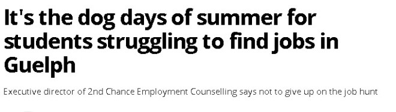

今年，安省年轻人找暑期工作变得困难重重。Guelph市就业咨询机构2nd Chance的执行董事Chris Baginski-Hansen说：“今年夏天和前几年的情况不一样。”
有一部分年轻人习惯了大量的工作机会，但现在情况不再如此。

安省Guelph的Matthew Martins过去两年一直在找工作，但尚未找到雇主愿意雇用他。
他今年16岁，将入读St. James天主教高中11年级。Martins正在上暑期学校，以便有事可做。夏天已经过半，他仍希望能找到一份工作。他希望帮助支付家里的水电费，并为未来存钱。
自从找工作以来，他只有过一次面试。Martins说，他希望能收到回复邮件或如何改进面试表现的反馈。他认为Guelph的就业市场已经饱和，这可能是没有太多职位空缺的原因。
“也许是因为我这个年龄的孩子没有像年长者那样的经验，不够资格获得这份工作，”Martins说。为了增加找到工作的机会，他在简历上加入了志愿者经历，并创建了LinkedIn个人资料。今年秋天，他希望参加学校的合作教育项目以获得工作经验。
19岁的Milica Becejski也还没有找到工作。她就读于Conestoga College。她和父母在Guelph生活了六年。过去一年她一直在找工作。她没有获得任何面试机会，而是收到了拒绝邮件。
Becejski想通过工作来养活自己，变得更加独立，并建立社交关系。她认为目前就业市场的主要问题是经济和入门级工作所需的经验。今年夏天她不太抱希望能找到工作。她认为到秋天可能会有更好的机会。“我会尽我所能。无论需要什么，我都会尽力找到工作，”她说。
Anika Turner从今年4月开始申请了大约250个工作，最终在2nd Chance找到了一份暑期工作。她将入读McMaster大学二年级。
在努力申请之后，她在Guelph和Hamilton获得了三个职位的面试。她说，如果找不到暑期工作，她将不得不申请学生贷款来支付学费。
“能够工作是一种巨大的解脱，”她说。
如果学生无法在暑期找到工作，这可能会影响他们的学费、书籍、租金和食物等费用。“对于很多学生来说，这不是玩乐的钱。这是支付教育费用的钱，”Baginski-Hansen说。
他的建议是不要放弃找工作。“你必须坚持不懈，继续努力，你不知道前面会有什么机会，”他还说，亲自递交简历而不是在线申请对雇主来说意义重大。
根据加拿大统计局的青年就业统计，从2023年4月到2024年4月，15到24岁青年的失业率从9.9%上升到12.8%。
这是自2016年7月以来青年的最高失业率，不包括2020年和2021年COVID-19大流行期间。
Waterloo Wellington Dufferin劳动力规划委员会在过去两个夏天追踪了青年暑期就业情况，关注15至19岁、20至24岁和25至29岁的青年。委员会的执行董事Charlene Hofbauer说，目前年龄较大的年龄组面临困难。
2023年6月，Guelph普查大都市区（包括Guelph、Guelph-Eramosa和Puslinch）内，25至29岁年龄组的就业率为92.2%。今年6月，这一数字降至77.5%。
20至24岁年龄组在2023年6月的就业率为82.1%，今年变化不大，为82.6%。
15至19岁年龄组在2023年6月的就业率为54.4%，今年为59%。
根据加拿大统计局6月的劳动力调查，今年6月15至24岁青年的失业率为13.5%。
一位网友@LoveGuelph表示，直到2015年左右，学生们找工作都很容易。工作不仅能支付教育费用，还能支付食物和房租。那么现在的年轻人如果想接受教育该怎么办呢？暑期工作已经成为过去，因为成千上万的国际申请者在争夺同样的工作机会。我们需要投资于我们的青年，为他们提供更多的机会和住房。情况正在变得越来越糟糕。
另一位网友@iPaint直言：“入门级工作的资格要求？入门级工作之所以被称为入门级，是因为只需要最低限度的技能。我认为就业市场充斥着工作时间过多的国际学生，他们抢走了加拿大年轻人的工作机会。”
你身边有正在找工作的年轻人吗？